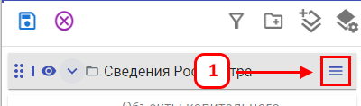
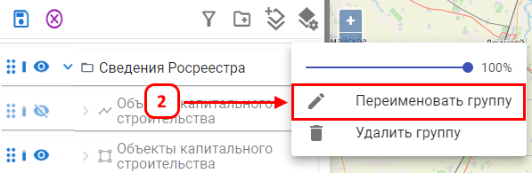
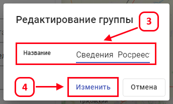
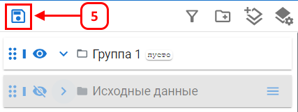

Переименование группы слоев
Переименование группы позволяет изменить ее наименование в списке слоев.
Для переименования группы выполните следующие шаги:




После выполнения действий группа будет отображаться с новым наименованием в списке слоев.